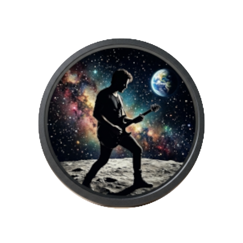

- Alguém do céu
- Rota de colisão
- Eu quero a sorte de te ter sem merecer
- Esclarecido
- Um novo dia
- Anna
- As vezes as coisas mudam
- De repente
- Delicadamente
- Olhos bionicos
- Massacre do sistema
- Celabrar


Banda Rock LunarO projeto Rock Lunar nasceu em Guarulhos, inicialmente concebido como um coletivo onde Bruno Santos atuava exclusivamente como compositor. Na época, a ideia era apenas criar as bases para outros músicos executarem. No entanto, com faltas recorrentes do guitarrista, Bruno assumiu a guitarra base para manter os ensaios vivos.
Com o tempo, os caminhos dos integrantes se distanciaram e o projeto inicial acabou não fluindo como o esperado. Decidido a não abandonar suas criações, Bruno seguiu sozinho, transformando o Rock Lunar em um projeto autoral solo. A grande virada de chave aconteceu com a chegada das ferramentas de inteligência artificial, que permitiram lapidar arranjos, estruturar a produção e viabilizar o lançamento oficial do seu primeiro álbum de estúdio nas principais plataformas digitales: o aclamado ALGUÉM DO CÉU
O lançamento de ALGUÉM DO CÉU foi apenas o primeiro grande marco na jornada do Rock Lunar. Com uma vasta bagagem de composições inéditas guardadas e lapidadas ao longo do tempo, o projeto não para por aqui. A energia criativa continua em alta, impulsionada pela busca constante por evolução sonora e pela maturidade artística que se consolidou nos últimos anos.
Para os próximos anos, o planejamento já está traçado: em 2027, a meta é brindar os ouvintes com um **novo álbum completo contendo cerca de 13 faixas inéditas**, aprofundando ainda mais a sonoridade rock e post-grunge da banda. E, coroando essa trajetória autoral, o plano é fechar o ciclo em **2028** com o lançamento de mais um grande álbum — que marcará o encerramento desta fase de grandes entregas. As músicas guardadas para esses próximos trabalhos trazem arranjos ainda mais maduros, intensos e marcantes. O melhor do Rock Lunar ainda está por vir.